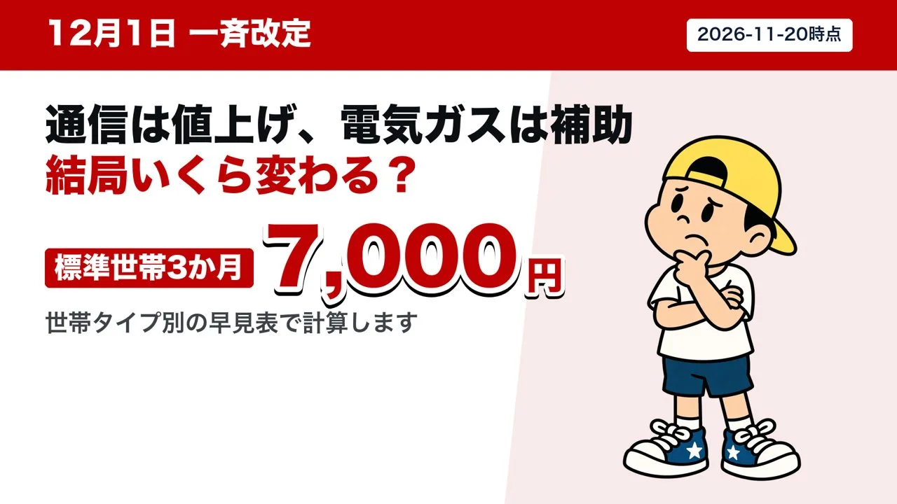
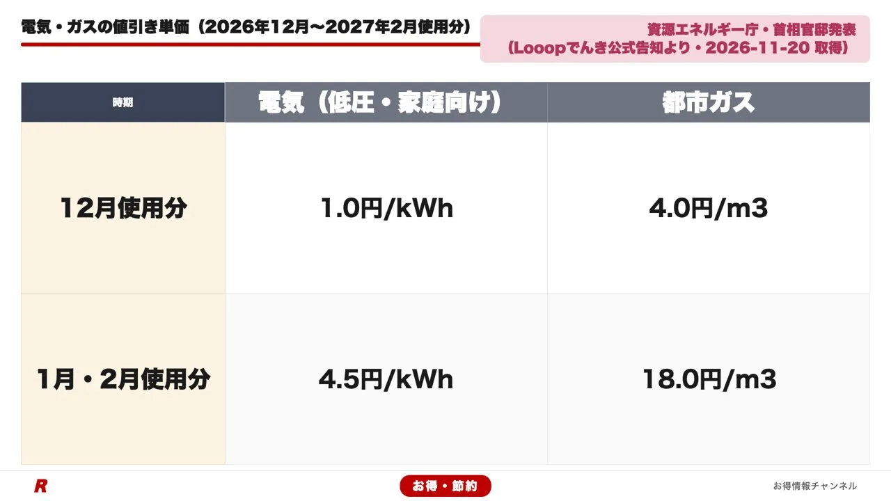
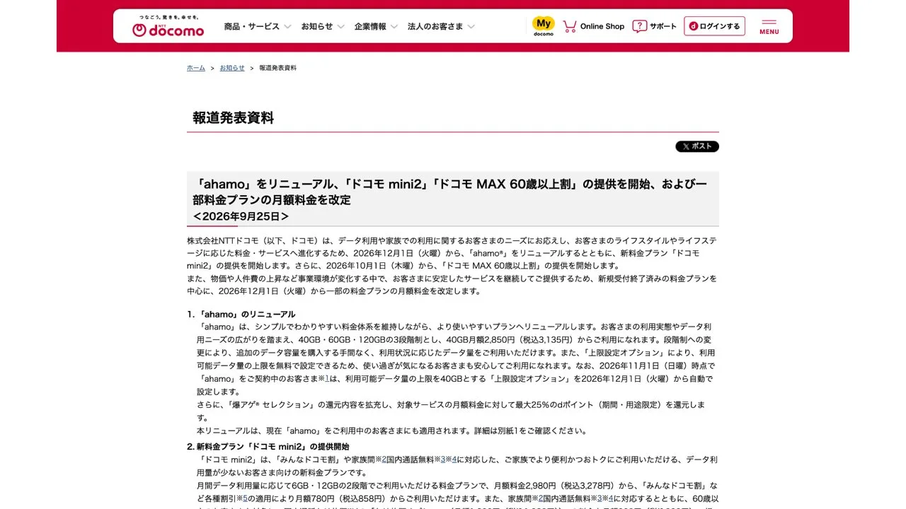
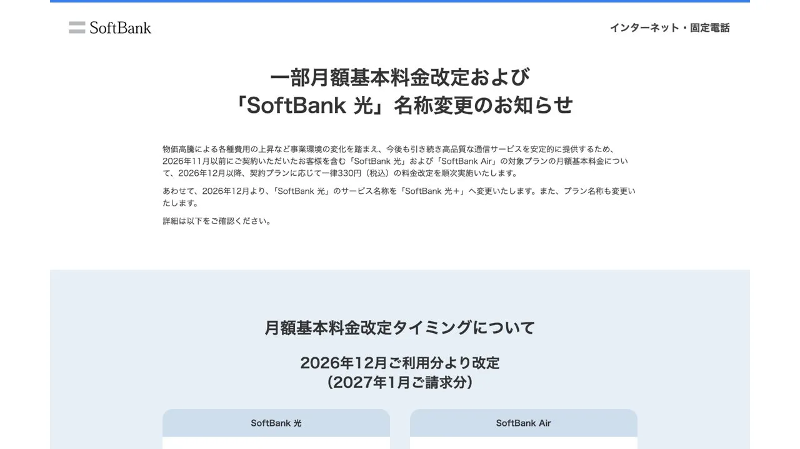
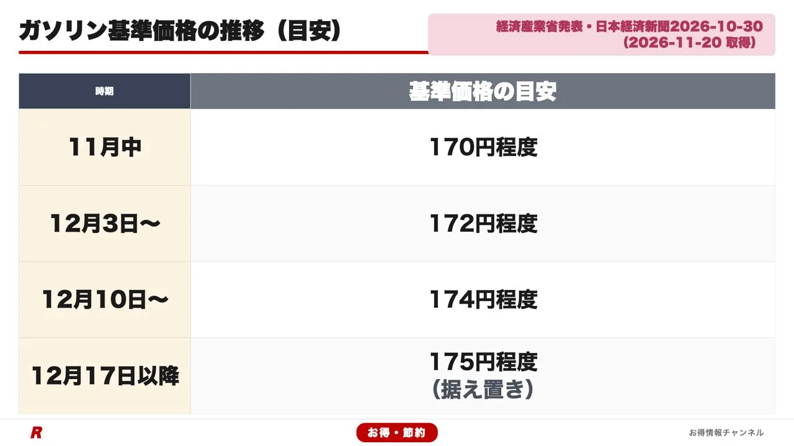
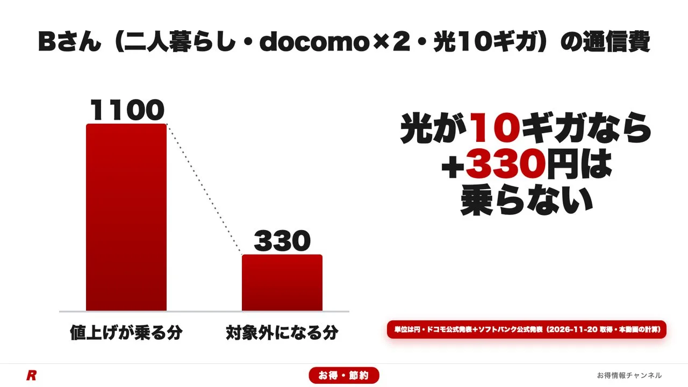
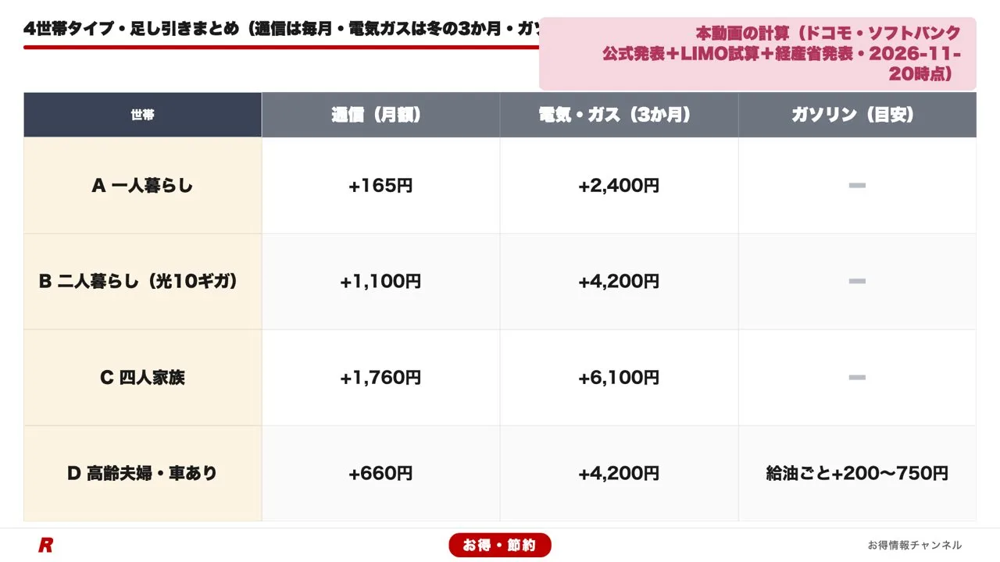
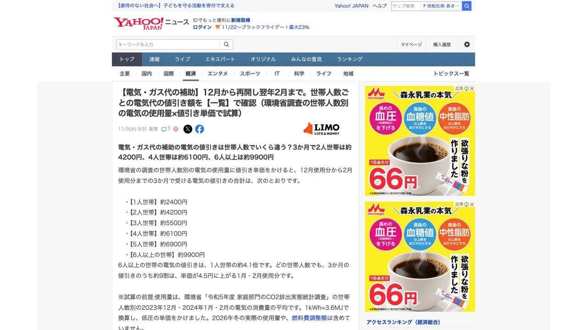

電気ガス補助金はいつまでかというと、2026年12月〜2027年2月使用分の3か月間です。申請は不要で、電力・ガス会社が検針・請求のタイミングで自動的に値引きします。ただし同じ12月に、ドコモとソフトバンクの通信料金の値上げも重なります。この記事では、電気・ガスの補助と通信の値上げを合わせて、世帯タイプ別に月いくら変わるかを計算します。
 ▶ この記事の内容を動画で見る（お金の総合チャンネル）
▶ この記事の内容を動画で見る（お金の総合チャンネル）

01電気ガス補助金はいつまで？対象と金額
2026年11月13日、政府は電気・都市ガスなどの料金支援のため、2026年度予備費から約6,500億円の支出を閣議決定しました。このうち約5,200億円が、12月〜2027年2月の電気・都市ガス代の補助にあてられます。
値引きの単価は、電気（低圧・家庭向け）が12月1.0円/kWh・1〜2月4.5円/kWh、都市ガスが12月4.0円/m3・1〜2月18.0円/m3です。標準的な家庭なら、電気・ガス合わせて3か月で7,000円程度の見込みです。

この補助は申請が不要で、検針・請求のタイミングで自動的に反映されます。電力会社・ガス会社に自分で連絡する必要はありません。
ポイント対象は都市ガス世帯とオール電化世帯です。LPガス・灯油を使っている世帯は、都市ガス分の値引きの対象外になりますが、かわりに地方交付金を通じた別の支援が用意されています。
02通信は12月1日から値上げ
通信4社は12月1日から一斉に値上げします。NTTドコモは2026年9月25日付で、新規受付を終了した料金プランを中心に月額料金を改定すると発表しました。eximo・5Gギガホプレミアは＋550円（税込）、irumo（3GB・6GB・9GB）は＋330円（税込）、ahamoは＋165円（税込）です。
ahamoは12月1日から、30GB単一プランを廃止し、40GB・60GB・120GBの3段階制に移行します。現行の30GB・2,970円（税込）に対し、新しい40GBプランは3,135円（税込）です。あわせて「大盛り」オプションは11月30日で提供終了します。
SoftBank光・SoftBank Airの対象プランも、12月以降は一律330円（税込）の料金改定が順次実施されます。ただし、SoftBank光10ギガを使っている人だけは、この改定の対象外です。
| サービス | 値上げ額 | 対象外になる人 |
|---|---|---|
| eximo・5Gギガホプレミア | ＋550円（税込） | 新プランに変更済みの人 |
| irumo（3/6/9GB） | ＋330円（税込） | 該当プランを使っていない人 |
| ahamo | ＋165円（税込） | - |
| SoftBank光・Air | ＋330円（税込） | 光10ギガを使っている人 |


注意値上げの対象は、新規受付を終了した古いプランのまま使い続けている人が中心です。自分のプランは各社の公式サイトで確認できます。
通信費そのものを見直したい場合は、携帯電話の乗り換えMNPのやり方と手数料も参考にしてください。
03ガソリンと食品も、じわじわ値上げ
資源エネルギー庁は2026年3月19日から、ガソリンなどの燃料油に支援を行っています。政府は2026年10月29日・30日、11月末に期限を迎えるこの措置について、12月以降は段階的に縮小する方針を決めました。
経済産業省は、店頭価格の目安となる基準価格を12月中に3週間かけて計5円引き上げると発表しています。目安は11月中170円程度から、12月3日172円程度、12月10日174円程度、12月17日以降175円程度です。40リットル給油した場合の目安差額は、5円×40リットルで200円ほどです。

食品も値上げが続きます。味の素は家庭用製品37品種を、12月1日納品分から約5〜15%改定すると発表しました。明治も12月1日出荷分から、プロテイン飲料「ザバス」など22品を約6〜11%改定します。
04結局、世帯タイプ別に月いくら変わるか
ここまでの値上げと補助を、4つの世帯タイプで足し引きしてみます。
一人暮らしでahamoだけ、光回線なしのAさんは、通信の値上げが月165円です。電気・ガス補助は1人世帯で3か月約2,400円なので、冬の間は補助の方が大きくなります。
二人暮らしでdocomo（eximo）を2台使い、SoftBank光10ギガのBさんは、eximo2台分で＋1,100円が乗りますが、SoftBank光が10ギガなら光の値上げ＋330円は対象外です。

夫婦でeximoを2台、子どもがahamoを2台、光1ギガのCさん（四人家族）は、通信の値上げ合計が月1,760円、電気・ガス補助は3か月約6,100円です。irumoを2台使う高齢夫婦Dさんの通信値上げは月660円で、車で月150リットル給油するとガソリンの負担増も月750円ほど加わります。
| 世帯 | 通信（月額） | 電気・ガス（3か月） | ガソリン（目安） |
|---|---|---|---|
| A 一人暮らし（ahamoのみ・光回線なし） | ＋165円 | 約2,400円 | - |
| B 二人暮らし（docomo×2・光10ギガ） | ＋1,100円 | 約4,200円 | - |
| C 四人家族（夫婦docomo×2・子ahamo×2・光1ギガ） | ＋1,760円 | 約6,100円 | - |
| D 高齢夫婦（irumo×2・車で月150L給油） | ＋660円 | 約4,200円 | 給油ごと＋200〜750円 |

電気・ガス補助の世帯人数別の金額は、LIMO（Yahoo!ニュース配信）が環境省の世帯人数別電気使用量データをもとに試算したものです。電気分だけの金額で、ガス分や燃料費調整額は含まれていません。

05よくある質問
電気ガス補助金はいつまで続きますか？
2026年12月使用分から2027年2月使用分までの3か月間です。申請は不要で、検針・請求のタイミングで電力・ガス会社が自動的に値引きします。
電気ガス補助金はいくらになりますか？
世帯人数で変わります。LIMOの試算では電気分だけで1人世帯は3か月約2,400円、4人世帯は約6,100円です。標準的な家庭なら電気・ガス合わせて3か月7,000円程度の見込みです。
LPガスや灯油を使っている世帯は対象外ですか？
都市ガス分の値引きは対象外ですが、LPガス・灯油の世帯には、地方交付金を通じた別の支援が用意されています。
通信料金の値上げはいつから、いくらですか？
12月1日からです。ドコモのeximo・5Gギガホプレミアが＋550円、irumoが＋330円、ahamoが＋165円、SoftBank光・Air（光10ギガを除く）が＋330円です（いずれも税込）。
06まとめ
結論通信は毎月ずっと続く値上げ、電気・ガスは冬の3か月だけの補助金です。どちらが大きいかは世帯タイプ次第で、全員が得する・損するわけではありません。
- 電気ガス補助金は2026年12月〜2027年2月使用分の3か月間、申請不要で自動的に値引きされます。
- 通信は12月1日から、ドコモ・ソフトバンク各社で値上げが始まります（110〜550円）。
- ガソリンの基準価格も、12月中に3週間かけて計5円引き上げられます。
- 世帯タイプによって、通信の値上げと電気・ガス補助のどちらが大きいかは変わります。自分の世帯に近いタイプで確認してください。
金額や期間は、2026年11月20日時点で各社・各省庁が公表している内容にもとづきます。自分の契約プランや世帯の使用量によって実際の金額は変わるため、詳しくは各社の公式サイトで確認してください。
出典
- NTTドコモ 報道発表資料「ahamoをリニューアル…一部料金プランの月額料金を改定」（2026年9月25日）
- ドコモ公式「料金プラン内容および月額料金改定のお知らせ」
- ahamo公式「料金・データ量」
- SoftBank公式「一部月額基本料金改定および『SoftBank 光』名称変更のお知らせ」
- 「電気・ガス料金支援」政府公式サイト
- 資源エネルギー庁「中東情勢を踏まえた緊急的激変緩和措置」公式サイト
- 日本経済新聞「ガソリン補助、12月は3週間で5円上げ 予備費で来年1月分まで確保」（2026年10月30日）
- LIMO（Yahoo!ニュース配信）「【電気・ガス代の補助】12月から再開し翌年2月まで。世帯人数ごとの電気代の値引き額を【一覧】で確認」（2026年11月3日）
- 東京新聞（共同通信配信）「冬の電気・ガス支援決定 灯油も、6500億円」（2026年11月13日）